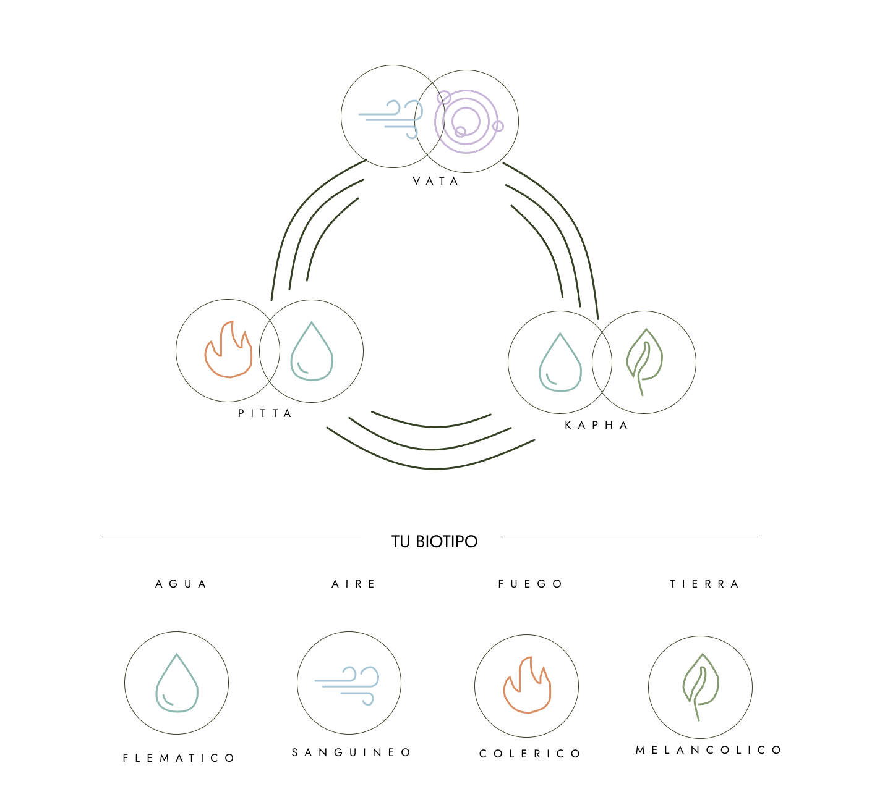

OJAS YUNI TEST -- Doshas y temperamentos hipocráticos
Descrubre tu verdadera matriz biológica
Tu naturaleza real es perfecta tal como es. ¡Sé 100% fiel a ti!
Date el tiempo necesario para contestar cada pregunta y autodescubrirte.
Empezar →